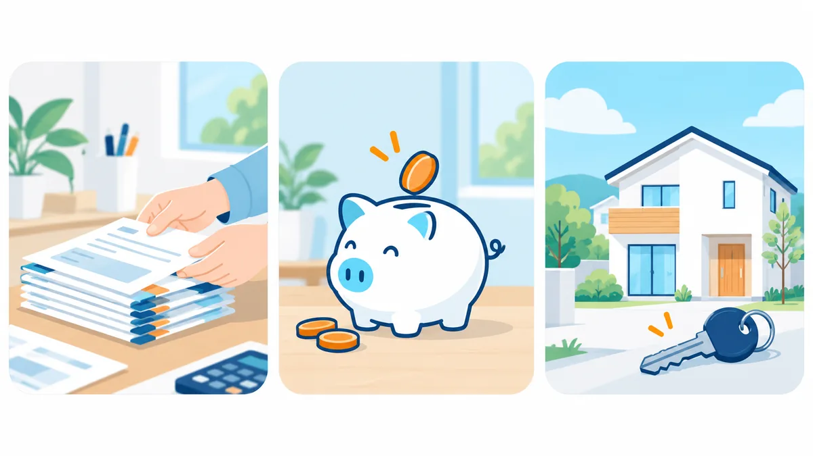

- はじまり
- 「マイホームはまだ先」と思いながら、毎月の家賃とローンの返済を続けている。
- LINE で相談
- いまのお支払いの内訳（借入先・残高・毎月の返済額）と、住まいの希望を伝える。
- お支払いの見直し
- 毎月のお支払いをひとつずつ整理し、住宅ローンと一緒に検討できる範囲を確認する。
- 資金の準備
- 取得に向けて必要な資金の見通しを立て、無理のない返済計画を組む。
- 住まいの取得
- 条件に合う住まいの取得を検討し、金融機関の判断を経て計画がかたちになる。
借入があっても住宅購入
借入があっても、
借入があっても、
住まいの計画はつくれます。
カードローン・車のローン・教育ローンなどのお借入れがあると、「家はまだ先」と感じる方が多くいらっしゃいます。住宅ローンを活用すると、毎月のお支払いの整理と住まいの取得を、ひとつの計画として検討できる場合があります。
相談は無料です。ご利用の可否や条件は、お客様ごとの状況および金融機関の判断によります。
LINEで無料相談をはじめる
CHECK
こんな方に向けたご相談です
- 家賃を払い続けるより、自分の資産になる住まいに切り替えたい
- カードローンや車のローンの返済が毎月あり、家計に余裕をつくりたい
- 複数のお支払いを、住宅ローンと一緒に検討したい
- 住まいの取得に向けて、資金計画をまとめて相談したい
- 教育費や生活費まで含めて、これからの家計を考えたい
ひとつでも当てはまるなら、整理できる余地があるかもしれません。
MECHANISM
住宅ローンを活用してできること

01
家計全体を見直せる可能性
いま別々になっている複数のお支払いを整理することで、家計全体を見直せる可能性があります。どこまで整理できるかは、お客様ごとの状況によります。
02
収入だけで判断しない取得計画
現在の収入だけでなく、将来の見通しや物件の価値も含めて、住まいの取得計画を検討できる場合があります。
03
資金状況に合わせたプラン設計
頭金・希望する借入額・返済期間など、個々の資金状況に合わせて取得プランを設計します。無理のない範囲をご一緒に確認します。
仕組みの考え方
住宅を購入する際の住宅ローンは、一般に他のお借入れより金利が低く、返済期間を長く設定できます。金融機関や商品によっては、住宅の取得資金と合わせて、既存のお借入れの返済に充てる資金を検討できる場合があります。その場合、毎月のお支払いが住宅ローンに集約され、家計の管理がしやすくなることがあります。
ただし、返済期間が長くなる分、総支払額が現状より増える可能性があります。また、対象となるお借入れの種類や金額の上限は金融機関ごとに異なり、対象外となるものもあります。仕組みの詳細は コラム「他の借入をまとめて検討できる住宅ローンとは」 で解説しています。
ご確認ください
- 返済期間が長くなる分、利息を含めた総支払額が現状より増える可能性があります。
- 対象となるお借入れの種類・上限額は金融機関ごとに異なります。対象外となるお借入れもあります。
- 現在返済が遅れているお借入れがある場合など、ご利用いただけないケースがあります。
- 住宅の取得以外の目的に充てる部分は、住宅ローン控除の対象外となる場合があります。
STORY
ご相談イメージ
ご相談の流れをイメージしていただくための例です。実在の個人の事例ではありません。
例：賃貸にお住まいで、カードローンと車のローンの返済がある方
FLOW
ご相談の流れ
LINE で友だち追加
ボタンを押して友だち追加するだけで始められます。相談だけでもかまいません。
いまの状況をお伺い
お借入れの内容、収入、住まいの希望をお伺いします。ご家族への連絡は行いません。
ご案内できる範囲のお伝え
状況に応じて、検討できる選択肢と、難しい点を率直にお伝えします。
資金計画と住まいの検討
宅地建物取引業者がご案内します。金融機関へのお申込みや物件の検討はこの段階で進めます。
ご相談の前に準備いただくと進めやすいもの
- 現在のお借入れの一覧（借入先・残高・毎月の返済額）
- 源泉徴収票や確定申告書など、収入がわかる書類
- 住まいの希望（エリア・ご予算・時期）のメモ
FAQ
よくあるご質問
借入があると、住宅ローンは組めないのでしょうか。
借入があること自体で一律に不可となるわけではありません。金融機関は、収入・借入の内容・毎月の返済額・返済状況などを総合的に見て判断します。まずは現状を整理し、どのような計画なら検討の余地があるかをご一緒に確認します。
カードローンや車のローンも、住宅ローンと一緒に検討できますか。
金融機関や商品によっては、住宅の取得資金と合わせて、他のお借入れの返済資金を検討できる場合があります。対象となるお借入れの種類や上限額は金融機関ごとに異なり、対象外となるものもあります。詳しくは無料相談でご確認ください。
相談には費用がかかりますか。
相談は無料です。相談だけで終わっていただいてもかまいません。
家族に知られずに相談できますか。
LINE でのご相談は、ご本人とのやり取りだけで進めます。ご家族への連絡は行いません。
返済が遅れている借入があります。相談できますか。
現在返済が遅れているお借入れがある場合や、過去のお支払い状況によっては、ご利用いただけないことがあります。状況をお伺いしたうえで、ご案内できる範囲を率直にお伝えします。
どの地域でも対応できますか。
ご相談は全国から LINE でお受けしています。物件のご案内や手続きの対応範囲は、エリアによって異なる場合があります。
関連ページ
本ページは一般的な情報提供と、ご相談の前に状況を整理していただくことを目的としています。ご利用の可否や条件は、お客様ごとの状況および金融機関の判断によります。ご相談の結果を保証するものではありません。